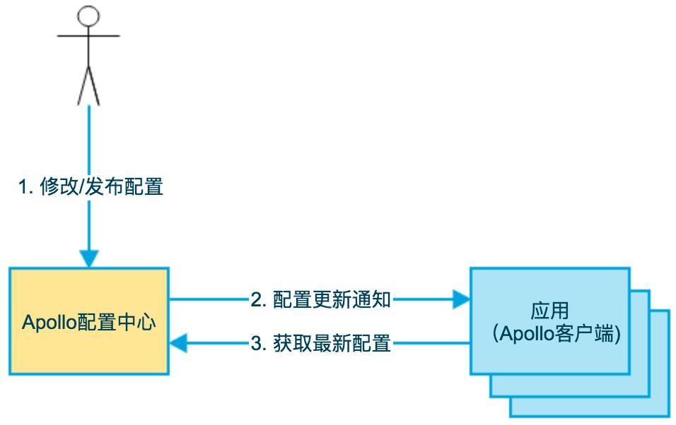

携程开源配置中心Apollo的设计与实现
宋顺，携程框架研发部技术专家。2016年初加入携程，主要负责中间件产品的相关研发工作。毕业于复旦大学软件工程系，曾就职于大众点评，担任后台系统技术负责人。本文来自宋顺在“携程技术沙龙——海量互联网基础架构”上的分享。
*视频由“IT大咖说”提供，时长约28分钟，请在WiFi环境下观看*
1、What is Apollo
1.1 背景
随着程序功能的日益复杂，程序的配置日益增多：各种功能的开关、参数的配置、服务器的地址……
对程序配置的期望值也越来越高：配置修改后实时生效，灰度发布，分环境、分集群管理配置，完善的权限、审核机制……
在这样的大环境下，传统的通过配置文件、数据库等方式已经越来越无法满足开发人员对配置管理的需求。
Apollo配置中心应运而生！
1.2 Apollo简介
Apollo（阿波罗）是携程框架部门研发的开源配置管理中心，能够集中化管理应用不同环境、不同集群的配置，配置修改后能够实时推送到应用端，并且具备规范的权限、流程治理等特性。
Apollo支持4个维度管理Key-Value格式的配置：
application(应用)
environment(环境)
cluster(集群)
namespace(命名空间)
同时，Apollo基于开源模式开发，开源地址：https://github.com/ctripcorp/apollo
1.3 配置基本概念
既然Apollo定位于配置中心，那么在这里有必要先简单介绍一下什么是配置。
按照我们的理解，配置有以下几个属性：
配置是独立于程序的只读变量
1） 配置首先是独立于程序的，同一份程序在不同的配置下会有不同的行为
2） 其次，配置对于程序是只读的，程序通过读取配置来改变自己的行为，但是程序不应该去改变配置
3） 常见的配置有：DB Connection Str、Thread Pool Size、Buffer Size、Request Timeout、Feature Switch、Server Urls等
配置伴随应用的整个生命周期
配置贯穿于应用的整个生命周期，应用在启动时通过读取配置来初始化，在运行时根据配置调整行为
配置可以有多种加载方式
配置也有很多种加载方式，常见的有程序内部hard code，配置文件，环境变量，启动参数，基于数据库等
配置需要治理
1） 权限控制
由于配置能改变程序的行为，不正确的配置甚至能引起灾难，所以对配置的修改必须有比较完善的权限控制
2） 不同环境、集群配置管理
同一份程序在不同的环境（开发，测试，生产）、不同的集群（如不同的数据中心）经常需要有不同的配置，所以需要有完善的环境、集群配置管理
3） 框架类组件配置管理
还有一类比较特殊的配置 - 框架类组件配置，比如CAT客户端的配置。
虽然这类框架类组件是由其他团队开发、维护，但是运行时是在业务实际应用内的，所以本质上可以认为框架类组件也是应用的一部分
这类组件对应的配置也需要有比较完善的管理方式
2、Why Apollo
正是基于配置的特殊性，所以Apollo从设计之初就立志于成为一个有治理能力的配置管理平台，目前提供了以下的特性：
统一管理不同环境、不同集群的配置
1）Apollo提供了一个统一界面集中式管理不同环境（environment）、不同集群（cluster）、不同命名空间（namespace）的配置
2）同一份代码部署在不同的集群，可以有不同的配置，比如zk的地址等
3）通过命名空间（namespace）可以很方便的支持多个不同应用共享同一份配置，同时还允许应用对共享的配置进行覆盖
配置修改实时生效（热发布）
用户在Apollo修改完配置并发布后，客户端能实时（1秒）接收到最新的配置，并通知到应用程序
版本发布管理
所有的配置发布都有版本概念，从而可以方便地支持配置的回滚
灰度发布
支持配置的灰度发布，比如点了发布后，只对部分应用实例生效，等观察一段时间没问题后再推给所有应用实例
权限管理、发布审核、操作审计
1）应用和配置的管理都有完善的权限管理机制，对配置的管理还分为了编辑和发布两个环节，从而减少人为的错误
2）所有的操作都有审计日志，可以方便的追踪问题
客户端配置信息监控
可以在界面上方便地看到配置在被哪些实例使用
提供Java和.Net原生客户端
1）提供了Java和.Net的原生客户端，方便应用集成
2）支持Spring Placeholder, Annotation和Spring Boot的ConfigurationProperties，方便应用使用（需要Spring3.1.1+）
3）同时提供了Http接口，非Java和.Net应用也可以方便的使用
提供开放平台API
1）Apollo自身提供了比较完善的统一配置管理界面，支持多环境、多数据中心配置管理、权限、流程治理等特性
2）不过Apollo出于通用性考虑，对配置的修改不会做过多限制，只要符合基本的格式就能够保存
3）在我们的调研中发现，对于有些使用方，它们的配置可能会有比较复杂的格式，而且对输入的值也需要进行校验后方可保存，如检查数据库、用户名和密码是否匹配
4）对于这类应用，Apollo支持应用方通过开放接口在Apollo进行配置的修改和发布，并且具备完善的授权和权限控制
部署简单
1）配置中心作为基础服务，可用性要求非常高，这就要求Apollo对外部依赖尽可能地少
2）目前唯一的外部依赖是MySQL，所以部署非常简单，只要安装好Java和MySQL就可以让Apollo跑起来
3）Apollo还提供了打包脚本，一键就可以生成所有需要的安装包，并且支持自定义运行时参数
3、Apollo at a glance
3.1 基础模型
如下即是Apollo的基础模型：
用户在配置中心对配置进行修改并发布
配置中心通知Apollo客户端有配置更新
Apollo客户端从配置中心拉取最新的配置、更新本地配置并通知到应用

3.2 界面概览

上图是Apollo配置中心中一个项目的配置首页
在页面左上方的环境列表模块展示了所有的环境和集群，用户可以随时切换
页面中央展示了两个namespace(application和FX.apollo)的配置信息，默认按照表格模式展示、编辑。用户也可以切换到文本模式，以文件形式查看、编辑
页面上可以方便地进行发布、回滚、灰度、授权、查看更改历史和发布历史等操作
3.3 添加/修改配置项
用户可以通过配置中心界面方便的添加/修改配置项：

输入配置信息：

3.4 发布配置
通过配置中心发布配置：

填写发布信息：

3.5 客户端获取配置（Java API样例）
配置发布后，就能在客户端获取到了，以Java API方式为例，获取配置的示例代码如下：

3.6 客户端监听配置变化（Java API样例）
通过上述获取配置代码，应用就能实时获取到最新的配置了。
不过在某些场景下，应用还需要在配置变化时获得通知，比如数据库连接的切换等，所以Apollo还提供了监听配置变化的功能，Java示例如下：

3.7 Spring集成样例
Apollo和Spring也可以很方便地集成，只需要标注@EnableApolloConfig后就可以通过@Value获取配置信息：


4、Apollo in depth
通过上面的介绍，相信大家已经对Apollo有了一个初步的了解，接下来我们深入了解一下Apollo的核心概念和背后的设计。
4.1 Core Concepts
application (应用)
1）这个很好理解，就是实际使用配置的应用，Apollo客户端在运行时需要知道当前应用是谁，从而可以去获取对应的配置
2）每个应用都需要有唯一的身份标识 - appId，我们认为应用身份是跟着代码走的，所以需要在代码中配置：
Java客户端通过classpath:/META-INF/app.properties来指定appId
.Net客户端通过app.config来指定appId
environment (环境)
1）配置对应的环境，Apollo客户端在运行时需要知道当前应用处于哪个环境，从而可以去获取应用的配置
2）我们认为环境和代码无关，同一份代码部署在不同的环境就应该能够获取到不同环境的配置
3）所以环境默认是通过读取机器上的配置（server.properties中的env属性）指定的，不过为了开发方便，我们也支持运行时通过System Property等指定，server.properties文件路径如下：
Windows:C:\opt\settings\server.properties
Linux/Mac:/opt/settings/server.properties
cluster (集群)
1）一个应用下不同实例的分组，比如典型的可以按照数据中心分，把上海机房的应用实例分为一个集群，把北京机房的应用实例分为另一个集群。
2）对不同的cluster，同一个配置可以有不一样的值，如zookeeper地址。
3）集群默认是通过读取机器上的配置（server.properties中的idc属性）指定的，不过也支持运行时通过System Property指定
namespace (命名空间)
1）一个应用下不同配置的分组，可以简单地把namespace类比为文件，不同类型的配置存放在不同的文件中，如数据库配置文件，rpc配置文件，应用自身的配置文件等
2）应用可以直接读取到公共组件的配置namespace，如DAL，RPC等
3）应用也可以通过继承公共组件的配置namespace来对公共组件的配置做调整，如DAL的初始数据库连接数
4.2 总体设计

上图简要描述了Apollo的总体设计，我们可以从下往上看：
ConfigService提供配置的读取、推送等功能，服务对象是Apollo客户端
AdminService提供配置的修改、发布等功能，服务对象是Apollo Portal（管理界面）
ConfigService和Admin Service都是多实例、无状态部署，所以需要将自己注册到Eureka中并保持心跳
在Eureka之上我们架了一层Meta Server用于封装Eureka的服务发现接口
Client通过域名访问Meta Server获取Config Service服务列表（IP+Port），而后直接通过IP+Port访问服务，同时在Client侧会做load balance、错误重试
Portal通过域名访问Meta Server获取Admin Service服务列表（IP+Port），而后直接通过IP+Port访问服务，同时在Portal侧会做load balance、错误重试
为了简化部署，我们实际上会把Config Service、Eureka和Meta Server三个逻辑角色部署在同一个JVM进程中
4.2.1 Why Eureka
为什么我们采用Eureka作为服务注册中心，而不是使用传统的zk、etcd呢？我大致总结了一下，有以下几方面的原因：
它提供了完整的Service Registry和Service Discovery实现
首先是提供了完整的实现，并且也经受住了Netflix自己的生产环境考验，相对使用起来会比较省心。
和Spring Cloud无缝集成
1）我们的项目本身就使用了Spring Cloud和Spring Boot，同时Spring Cloud还有一套非常完善的开源代码来整合Eureka，所以使用起来非常方便。
2）另外，Eureka还支持在我们应用自身的容器中启动，也就是说我们的应用启动完之后，既充当了Eureka的角色，同时也是服务的提供者。这样就极大的提高了服务的可用性。
3）这一点是我们选择Eureka而不是zk、etcd等的主要原因，为了提高配置中心的可用性和降低部署复杂度，我们需要尽可能地减少外部依赖。
Open Source
最后一点是开源，由于代码是开源的，所以非常便于我们了解它的实现原理和排查问题。
4.3 客户端设计

上图简要描述了Apollo客户端的实现原理：
1、客户端和服务端保持了一个长连接，从而能第一时间获得配置更新的推送。
2、客户端还会定时从Apollo配置中心服务端拉取应用的最新配置。
1）这是一个fallback机制，为了防止推送机制失效导致配置不更新
2）客户端定时拉取会上报本地版本，所以一般情况下，对于定时拉取的操作，服务端都会返回304 - Not Modified
3）定时频率默认为每5分钟拉取一次，客户端也可以通过在运行时指定System Property: apollo.refreshInterval来覆盖，单位为分钟。
3、客户端从Apollo配置中心服务端获取到应用的最新配置后，会保存在内存中
4、客户端会把从服务端获取到的配置在本地文件系统缓存一份
在遇到服务不可用，或网络不通的时候，依然能从本地恢复配置
5、应用程序可以从Apollo客户端获取最新的配置、订阅配置更新通知
4.3.1 配置更新推送实现
前面提到了Apollo客户端和服务端保持了一个长连接，从而能第一时间获得配置更新的推送。
长连接实际上我们是通过Http Long Polling实现的，具体而言：
客户端发起一个Http请求到服务端
服务端会保持住这个连接30秒
如果在30秒内有客户端关心的配置变化，被保持住的客户端请求会立即返回，并告知客户端有配置变化的namespace信息，客户端会据此拉取对应namespace的最新配置
如果在30秒内没有客户端关心的配置变化，那么会返回Http状态码304给客户端
客户端在服务端请求返回后会自动重连
考虑到会有数万客户端向服务端发起长连，在服务端我们使用了async servlet(Spring DeferredResult)来服务HttpLong Polling请求。
4.4 可用性考虑
配置中心作为基础服务，可用性要求非常高，下面的表格描述了不同场景下Apollo的可用性：
场景 | 影响 | 降级 | 原因 |
某台config service下线 | 无影响 | Config service无状态，客户端重连其它config service | |
所有config service下线 | 客户端无法读取最新配置，Portal无影响 | 客户端重启时,可以读取本地缓存配置文件 | |
某台admin service下线 | 无影响 | Admin service无状态，Portal重连其它admin service | |
所有admin service下线 | 客户端无影响，portal无法更新配置 | ||
某台portal下线 | 无影响 | Portal域名通过slb绑定多台服务器，重试后指向可用的服务器 | |
全部portal下线 | 客户端无影响，portal无法更新配置 | ||
某个数据中心下线 | 无影响 | 多数据中心部署，数据完全同步，Meta Server/Portal域名通过slb自动切换到其它存活的数据中心 |
5、Contribute to Apollo
Apollo从开发之初就是以开源模式开发的，所以也非常欢迎有兴趣、有余力的朋友一起加入进来。
服务端开发使用的是Java，基于Spring Cloud和SpringBoot框架。客户端目前提供了Java和.Net两种实现。
Github地址：https://github.com/ctripcorp/apollo
欢迎大家发起Pull Request！
下载讲师PPT请点击文章底部“阅读原文”。
推荐阅读：